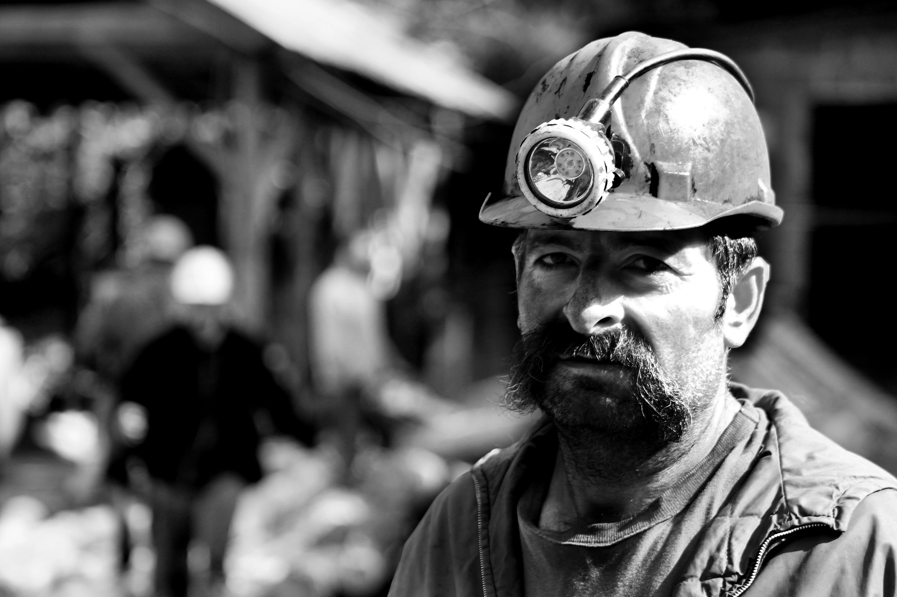
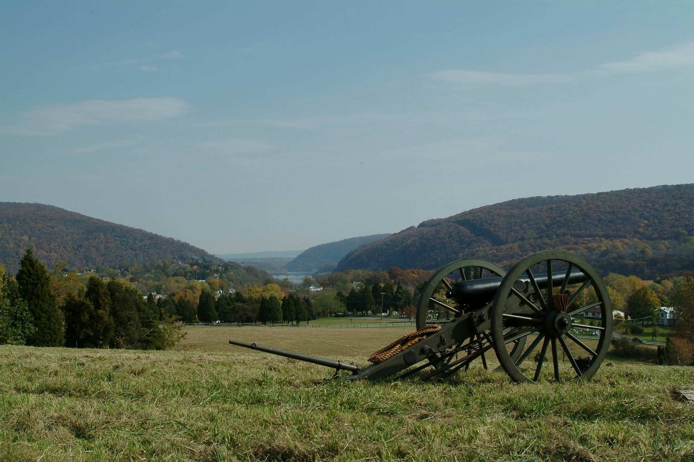

The Fine History Of West Virginia
Mining

West Virginia's main industry is Coal mining. Coal was first discovered in West Virginia 1742 in Boone County.
Coal occurs in 53 out of the 55 counties of West Virginia. 43 of them have reserves of minable coal.
It produces 30,000 jobs directly involved in coal mining. Who knows how many more jobs that produces.
West Virginia leads the nation in underground coal production.
Although coal is the main industry, people are fighting for change.

The Civil War
West Virginia played a key role in the American Civil war.
Heck, you could say the whole state existsbecause of it.
They believe 50,000 west virginians participated in the war. The most iconic being Stonewall Jackson. Harper's Ferry is a great location in West Virginia to visit, if you want to learn more.